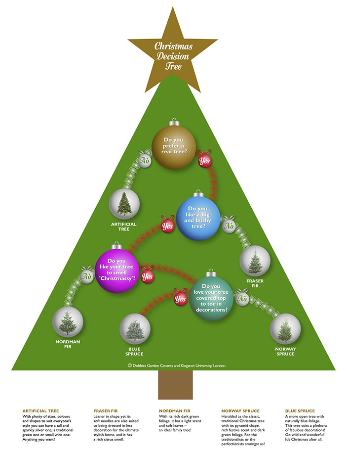
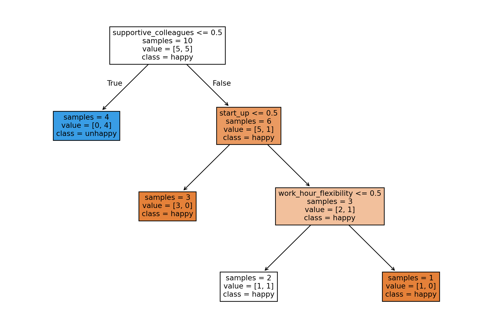
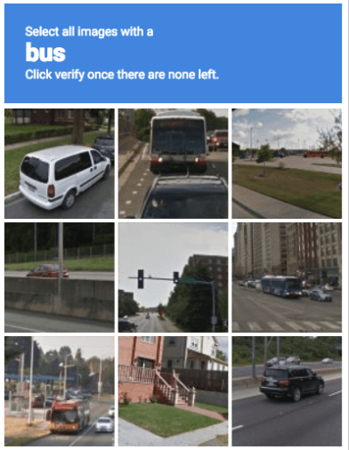

| supportive_colleagues | work_hour_flexibility | start_up | |
|---|---|---|---|
| 0 | 1 | 0 | 0 |
| 1 | 0 | 0 | 1 |
| 2 | 0 | 1 | 1 |
| 3 | 1 | 1 | 1 |

With a prevalence of machine learning, more and more industries and schools have made it as a required course to assist in data-driven decisions and predictions. It aims to develop and study statistical algorithm by learning from previous data and making generalization to unseen data. However, depending on different types of data, there are so many models available and choosing the right one has became the top concerns that people may have. In this blog, I explained 3 popular machine learning models — Decision Trees, K-Nearest Neighbors (KNN), Naive Bayes — to explain how they work, their pros and cons, and when to use them. This post is intended for the people has some knowledge about machine learning but don’t know how to choose among different models. By the end, you’ll have a clear understanding of these foundational techniques and their applications.
Decision Trees: The Intuitive Splitter
Imagine a Christmas tree with branches branching up from the bottom of the trunk, and these branches branching out into more branches, leading to different directions. The Decision Trees are based on the same idea! A root node represents the question you want to ask, and each branches connects a leaf node to the next leaf node and represents True or False, where leaf nodes represent the outcome or a new question when the path from root to the leaf node is followed.

When To Use Decision Trees?
Decision Trees are versatile and widely used in machine learning for both classification and regression tasks.
Pros:
- Highly Interpretable since it is very similar to the process of human making decisions.
- Handle irrelevant features by splitting only on the most important ones.
- Rank features based on their importance, providing insights into which features drive predictions.
- It can handle both numerical and categorical data.
Cons:
- It is easy to overfitting on noisy data, so it is importance to control its tree depth, which is the length of the longest path from the tree root to a leaf.
- Sensitive to small variations in the data: If two features have nearly equal importance, a slight change in the dataset might lead the tree to split on one feature instead of the other, altering downstream splits and the tree’s predictions.
Example:
Imagine you have three different job offers with comparable salaries and job descriptions. In this case, you want to decide which one to accept, and make this decision based on which job is likely to make you happy. There are three things that is associated with your happiness: supportive colleagues, work-hour flexibility, whether the company is a start-up or not. Thus, a decision tree may be used for this case.
The dataframe looks like this with 1 for yes and 0 for no:
You also get data from toy survey. You decide to train a machine learning model using this toy survey data and use this model to predict which job from offer_df is likely to make you happy.
| supportive_colleagues | work_hour_flexibility | start_up | target | |
|---|---|---|---|---|
| 0 | 1 | 1 | 1 | happy |
| 1 | 1 | 1 | 0 | happy |
| 2 | 1 | 0 | 1 | happy |
| 3 | 0 | 1 | 0 | unhappy |
| 4 | 0 | 1 | 1 | unhappy |
| 5 | 1 | 0 | 0 | happy |
| 6 | 1 | 1 | 0 | happy |
| 7 | 0 | 0 | 1 | unhappy |
| 8 | 1 | 0 | 1 | unhappy |
| 9 | 0 | 0 | 0 | unhappy |
Therefore, you can follow the simple steps below to train the model and make decisions 1. Create a decision tree classifier object, where random_state here is used to ensure the randomness is consistent every time you run the code.
from sklearn.tree import DecisionTreeClassifier
toy_tree = DecisionTreeClassifier(random_state=16)- Fit the decision tree classifier with toy dataframe.
toy_tree.fit(X_train_toy, y_train_toy)DecisionTreeClassifier(random_state=16)In a Jupyter environment, please rerun this cell to show the HTML representation or trust the notebook.
On GitHub, the HTML representation is unable to render, please try loading this page with nbviewer.org.
DecisionTreeClassifier(random_state=16)
- Visualize the trained decision tree.
import matplotlib.pyplot as plt
from sklearn import tree
width = 12
height = 8
class_names = ["happy", "unhappy"]
feature_names = X_train_toy.columns.to_list()
plt.figure(figsize=(width, height))
toy_tree_viz = tree.plot_tree(toy_tree,
feature_names = feature_names,
class_names = class_names,
impurity=False,
fontsize=10,
filled=True)
toy_tree_viz[Text(0.3333333333333333, 0.875, 'supportive_colleagues <= 0.5\nsamples = 10\nvalue = [5, 5]\nclass = happy'),
Text(0.16666666666666666, 0.625, 'samples = 4\nvalue = [0, 4]\nclass = unhappy'),
Text(0.25, 0.75, 'True '),
Text(0.5, 0.625, 'start_up <= 0.5\nsamples = 6\nvalue = [5, 1]\nclass = happy'),
Text(0.41666666666666663, 0.75, ' False'),
Text(0.3333333333333333, 0.375, 'samples = 3\nvalue = [3, 0]\nclass = happy'),
Text(0.6666666666666666, 0.375, 'work_hour_flexibility <= 0.5\nsamples = 3\nvalue = [2, 1]\nclass = happy'),
Text(0.5, 0.125, 'samples = 2\nvalue = [1, 1]\nclass = happy'),
Text(0.8333333333333334, 0.125, 'samples = 1\nvalue = [1, 0]\nclass = happy')]
The root node splits on supportive_colleagues, which means that if the colleagues is not supportive (values less than or equal to 0.5), it will lead to unhappy. However, if the colleagues are supportive (supportive_colleagues > 0.5), it will lead to the next question of if the company is a start up. If the company is not a start up (start_up <= 0.5), it will be happy, while for start up (> 0.5), the tree further splits on work_hour_flexibility. In this branch, if the work_hour_flexibility <= 0.5, the majority class is happy, but if work_hour_flexibility > 0.5, the classification remains happy.
- With the trained decision tree, we now make prediction on our offers.
predictions = toy_tree.predict(offer_df).tolist()
happy_job_indices = [index for index, prediction in enumerate(predictions) if prediction == "happy"]
happy_job_indices[0, 3]Therefore, we are happy about the offer with indices of 0 and 3, so we can choose offer from these two.
I believe now you have a basic understanding of decision tree. However, this is just a simple example. In real time, the dataset is larger and noisy. The decision tree requires more careful control on its tree depth with selecting the features.
K-Nearest Neighbours (KNN): The Voting Neighbour

Have you seen this verification question before? It asks you to select all pictures that contain bus inside. Since you know how a bus looks like, the way you identify if bus inside the picture is to see how close or similar the things inside the picture to the bus you know. KNN has a similar idea. It works by comparing a new, unseen data points to its k closest neighbors and classifies data points based on the majority class of their nearest neighbours.
When To Use KNN?
KNN is a great starting point for classification and regression tasks when simplicity, interpretability, and relatively small data size are priorities.
Pros:
- It is easy to interpret since its logic is kind straightforward that people are grouped by their flock and a new person you met will likely have similar likes as his nearest neighbours. So as data point, a new point will likely have the same label/value as its nearest neighbors.
- KNN captures local structure in the data well: If the dataset has segments or groups that differ significantly, KNN can handle that naturally by focusing on local neighborhoods.
- It works for both classification and regression with minimal changes (mostly how you aggregate the neighbors’ information—majority vote for classification, average for regression).
Cons:
- It is not suitable for large dataset: Since KNN has no explicit training phase, and learn from the entire dataset, compute distances to all training points to find the nearest neighbors, It can be computationally Expensive at Prediction
- Similar to decision tree, it also needs to control for k, which is the number of neighbors to consider. A small k is susceptible to noise and outliers, while a large k can dilute local patterns.
- Struggles with High Dimensions: If there are many features, the notion of “distance” can become less meaningful since most points end up similarly distant. Therefore, you may need to reduce dimensionality first.
- Must Scale/Normalize Data: Since KNN is based on calculating the distance, if different features have widely varying scales, distance measures might be dominated by features with large magnitude.
Example:
Imagine you have a small dataset of flowers with the following features of Sepal length, Sepal width, Petal length, Petal width. Each flower is labeled as one of three species: setosa, versicolor, or virginica. By training on the KNN, you want to predict which of the tree species belongs to when you have a new flower’s measurements.
| sepal length (cm) | sepal width (cm) | petal length (cm) | petal width (cm) | target | |
|---|---|---|---|---|---|
| 0 | 5.1 | 3.5 | 1.4 | 0.2 | 0 |
| 1 | 4.9 | 3.0 | 1.4 | 0.2 | 0 |
| 2 | 4.7 | 3.2 | 1.3 | 0.2 | 0 |
| 3 | 4.6 | 3.1 | 1.5 | 0.2 | 0 |
| 4 | 5.0 | 3.6 | 1.4 | 0.2 | 0 |
| ... | ... | ... | ... | ... | ... |
| 145 | 6.7 | 3.0 | 5.2 | 2.3 | 2 |
| 146 | 6.3 | 2.5 | 5.0 | 1.9 | 2 |
| 147 | 6.5 | 3.0 | 5.2 | 2.0 | 2 |
| 148 | 6.2 | 3.4 | 5.4 | 2.3 | 2 |
| 149 | 5.9 | 3.0 | 5.1 | 1.8 | 2 |
150 rows × 5 columns
Therefore, here are some example code: 1. Create and train the KNN classifier, here we will use k=3 neighbours
from sklearn.neighbors import KNeighborsClassifier
knn = KNeighborsClassifier(n_neighbors=3)
knn.fit(X_train, y_train)KNeighborsClassifier(n_neighbors=3)In a Jupyter environment, please rerun this cell to show the HTML representation or trust the notebook.
On GitHub, the HTML representation is unable to render, please try loading this page with nbviewer.org.
KNeighborsClassifier(n_neighbors=3)
- Predict on a new sample (for example: sepal length=5.0, sepal width=3.0, petal length=1.6, petal width=0.4)
new_sample = [[5.0, 3.0, 1.6, 0.4]]
predicted_class = knn.predict(new_sample)
print("Predicted species (as name):", iris.target_names[predicted_class][0])Predicted species (as name): setosaTherefore, the predicted species is setosa on our new sample.
Naive Bayes: The Probabilistic Predictor

Have you noticed that some of your emails have been arriving to your spam folder? With so much cybercrime many email platforms have ramped up their Spam Filters. But how do they filter spam emails? For years, best spam filtering methods used Naive Bayes. For example, SpamAssassin is a spam filtering system based on naive Bayes. It is a probabilistic model based on Bayes’ theorem, which assumes that all features are independent. There are different types of Naive Bayes, including Gaussian Naive Bayes for continuous data, Multinomial Naive Bayes for count-based features and Bernoulli Naive Bayes for binary/boolean features.
When To Use Naive Bayes?
Naive Bayes is frequently used in spam detection or sentiment analysis. It’s fast, simple, and often surprisingly effective for tasks like text classification. However, in real life, its assumption of independence is rarely 100% true.
Pros
- It is fast and efficient because of itsclosed-form calculations rather than iterative optimization. Many machine learning algorithms (e.g., logistic regression, neural networks) use iterative procedures like gradient descent, which can be time-consuming for large datasets. However, Naive Bayes trains by calculating straightforward probability estimates (mean, variance for each feature, or frequency counts).
- It works well with Noisy Data: Although the independence assumption is hard to follow, it still works well with Noisy data. Since Naive Bayes treats each feature’s contribution to the class independently, the “correct” features can still overwhelmingly point to the right class, effectively “averaging out” the noise.
- It works well with High-Dimensional Data (text): Similar to the reason above, Naive Bayes is known to produce strong baseline results by ignoring inter-feature dependencies that might otherwise exacerbate noise issues.
Cons
- Assumption of Independence brings benefits but also brings negative side to the model, since the assumption is hard to be 100% true in practice
- If a class–feature combination isn’t observed in the training set, it will assign zero probability unless you use smoothing.
Example:
We will use the same example above, but fit Naive Bayes to the example.
- Fit Naive Bayes model
nb = GaussianNB()
nb.fit(X_train, y_train)GaussianNB()In a Jupyter environment, please rerun this cell to show the HTML representation or trust the notebook.
On GitHub, the HTML representation is unable to render, please try loading this page with nbviewer.org.
GaussianNB()
- Predict a new example (e.g., [5.0, 3.0, 1.6, 0.4])
new_sample = np.array([[5.0, 3.0, 1.6, 0.4]])
predicted_class = nb.predict(new_sample)
print("Predicted class:", predicted_class)
print("Predicted species:", iris.target_names[predicted_class][0])Predicted class: [0]
Predicted species: setosa/Users/ubc/miniforge3/envs/571/lib/python3.12/site-packages/sklearn/base.py:493: UserWarning:
X does not have valid feature names, but GaussianNB was fitted with feature names
So, by using Naive Bayes, it also predict the new sample as setosa. Then, can we say the new sample is 100% setosa. Apparently not! We need to do model evaluation and see the test score for models and try more examples as needed.
Conclusion
| Model | Best Use Case | Pros | Cons | |
|---|---|---|---|---|
| 0 | Decision Trees | Interpretable classification problems | Visual, non-parametric | Prone to overfitting, requires pruning |
| 1 | KNN | Recommendation systems | Simple, dynamic | Computational cost, sensitive to noisy data |
| 2 | Naive Bayes | Text classification | Fast, works with categorical data | Assumes feature independence |
Each machine learning model comes with its unique strengths and weaknesses. Decision Trees excel in interpretability, KNN in simplicity, and Naive Bayes in high dimentional text data. We need to choose the right model based on comprehensively thinking and depend on the specific problem, data size, and complexity. Experiment with these models is needed to see which works best for your dataset.
Reference
London, Kinston University. 2013. “Mathematics Expert Devises Festive Formula to Solve the Struggle of Finding the Perfect Christmas Tree.” Kinston University London. https://www.kingston.ac.uk/news/article/1199/11-dec-2013-mathematics-expert-devises-festive-formula-to-solve-the-struggle-of-finding-the-perfect-christmas-tree/.
MrThink. 2022. “Are There Any Reliable CAPTCHAs? Competition for CAPTCHA Ideas That AIs Cant Solve.” LESSWRONG. https://www.lesswrong.com/posts/GNL8DbNFxQiSzMxYJ/are-there-any-reliable-captchas-competition-for-captcha.
Rosenau, Pam. 2021. “Why Are My Emails Going into Spam?” MVTV wireless. https://www.mvtvwireless.com/why-are-my-emails-going-into-spam/.
Team, Expert.ai. 2023. “What Is Machine Learning? A Definition.” Expert.ai Platform. https://www.expert.ai/wp-content/uploads/2022/03/Machine-Learning-Definition.jpg.
{kind=link}